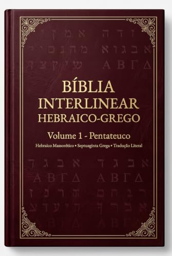

"As línguas originais são a bainha na qual repousa a espada do Espírito; são o cofre onde jaz essa joia inestimável." Com essa célebre metáfora, o reformador Martinho Lutero exortava a igreja a jamais negligenciar o estudo do hebraico e do grego bíblicos. Nenhuma tradução vernácula, por mais erudita e piedosa que seja, é capaz de transportar perfeitamente todas as nuances morfológicas, jogos de palavras, ecos intertextuais e tempos verbais característicos das línguas em que o Espírito Santo soprou as Escrituras.
1. O Limite Inerente das Traduções Convencionais
Toda tradução bíblica é, em alguma medida, um ato de interpretação. Existem duas grandes abordagens no campo da tradutologia sagrada:
- Equivalência Formal: Busca preservar a forma gramatical, ordem das palavras e raízes semânticas o mais próximo possível do original (como a consagrada versão Almeida).
- Equivalência Dinâmica ou Funcional: Prioriza a fluidez na língua receptora moderna, adaptando expressões hebraicas e gregas para termos equivalentes do dia a dia (como a Nova Versão Internacional).
Embora ambas possuam grande valor para a leitura devocional e evangelística, elas inevitavelmente ocultam termos técnicos fundamentais para a teologia exegética. Por exemplo, quando o leitor se depara com a palavra "amor" no texto em português, ele não tem como discernir de imediato se o hebraico utiliza khesed (a misericórdia leal da aliança eterna) ou ahava, nem se o grego emprega agape, philia ou storge. Da mesma forma, distinções vitais entre o aspecto verbal grego perfeito, imperfeito e aoristo tornam-se indistintas na língua portuguesa.
2. O Que é Uma Bíblia Interlinear de Verdade?
Uma Bíblia Interlinear é uma ferramenta filológica estruturada na qual o texto original (disposto linha por linha) é acompanhado diretamente abaixo por sua transliteração fonética e sua tradução literal palavra por palavra.
Entretanto, a metodologia pioneira desenvolvida pela Editora Pactum vai muito além dos interlineares rudimentares do passado. Nossas edições combinam quatro camadas analíticas em uma única visualização:
- O Texto Sagrado Original: Texto Massorético com vocalização tiberiense completa para o Antigo Testamento e Texto Majoritário/Crítico para o Novo Testamento;
- Transliteração Fonética Acadêmica: Permitindo que qualquer leitor, mesmo sem anos de seminário linguístico, pronuncie corretamente as palavras hebraicas e gregas;
- Glosas Morfológicas e Análise Gramatical: Identificação de partes do discurso, raízes de verbos, modos, tempos e afixos gramaticais;
- Tradução Exegética Contextual: Uma vertente em português que mantém a precisão termo a termo sem desrespeitar a sintaxe e o sentido orgânico do versículo.

Bíblia Interlinear Hebraico–Grego — Volume 1: Pentateuco
Texto Massorético Hebraico (BHS) e Septuaginta Grega (LXX) confrontados versículo a versículo, de Gênesis a Deuteronômio, com transliteração fonética integral, glosas morfológicas analíticas e tradução literal.
3. O Papel Estratégico da Septuaginta Grega (LXX)
Uma das maiores inovações das edições da Editora Pactum foi incluir o confronto sistemático entre o Texto Massorético Hebraico e a Septuaginta Grega (LXX) lado a lado.
Muitos estudantes ignoram que a Septuaginta — a mais antiga tradução das Escrituras Hebraicas para o grego koiné, realizada em Alexandria entre os séculos III e II a.C. — era a "Bíblia" mais amplamente citada pelos apóstolos e autores do Novo Testamento! Quando o apóstolo Paulo, o autor de Hebreus ou os evangelistas citavam o Antigo Testamento para as igrejas gentílicas, na maioria esmagadora das vezes eles utilizavam a terminologia da Septuaginta.
Confrontar o hebraico com a Septuaginta permite ao estudioso enxergar como os sábios judeus pré-cristãos compreendiam conceitos teológicos messiânicos essenciais séculos antes da encarnação de Jesus Cristo, fornecendo uma base inabalável para a apologia cristã e a exegese bíblica séria.
“Aquele que prega a Palavra sem consultar as fontes originais corre sempre o perigo de edificar doutrinas sobre metáforas de tradutores, em vez de assentar a fé na rocha firme da inspiração divina original.” — Princípio de Hermenêutica Bíblica Reformada
4. Como a Bíblia Interlinear Protege o Púlpito de Erros Graves
A história da teologia está repleta de heresias e distorções que nasceram simplesmente de interpretações errôneas de traduções imperfeitas. A utilização constante da Bíblia Interlinear protege o pregador e o mestre em três pontos cruciais:
- Evita o Anacronismo Linguístico: Impede que o pregador atribua significados modernos a vocábulos antigos. Por exemplo, a palavra grega dunamis (poder) não tem relação etimológica com "dinamite" (uma invenção moderna destrutiva), mas refere-se à capacidade operativa, inerente e soberana de Deus para criar e sustentar todas as coisas.
- Destaca a Enfase Retórica Original: No hebraico bíblico, a inversão da ordem padrão das palavras em uma frase ou a repetição enfática de uma raiz verbal (o infinitivo absoluto com o verbo finito, como em mot tamut, "morrendo morrerás") denota certeza inabalável e ênfase dramática que desaparecem em traduções frouxas.
- Capacita o Estudante Não Poliglota: Antigamente, ter acesso a essas percepções exigia dez anos de estudo rigoroso de gramática semítica e clássica. Com a Bíblia Interlinear moderna da Pactum, pastores de pequenas congregações e leigos aplicados conseguem verificar diretamente no texto o significado de cada raiz original com facilidade intuitiva.
Conclusão: A Palavra em Sua Mais Pura Fidelidade
O compromisso com a autoridade das Escrituras exige o correspondente zelo com as palavras que Deus escolheu para registrar Sua revelação. A coleção monumental de Bíblias Interlineares da Editora Pactum (abrangendo Pentateuco, Livros Históricos, Poéticos, Profetas e Novo Testamento) foi concebida para servir a essa nobre causa: alimentar a igreja de Cristo com a verdade pura, inalterada e radiante do texto sagrado.